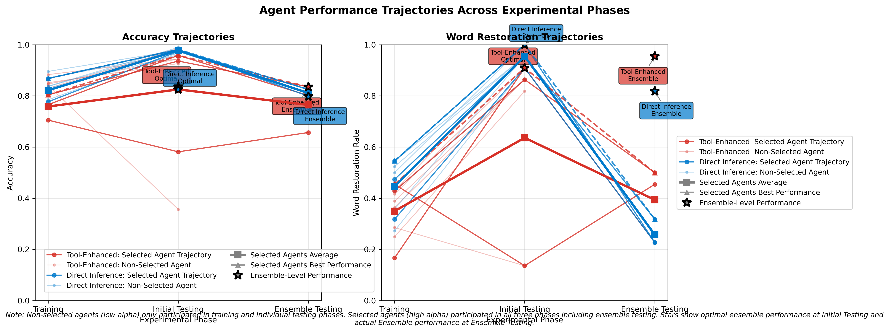
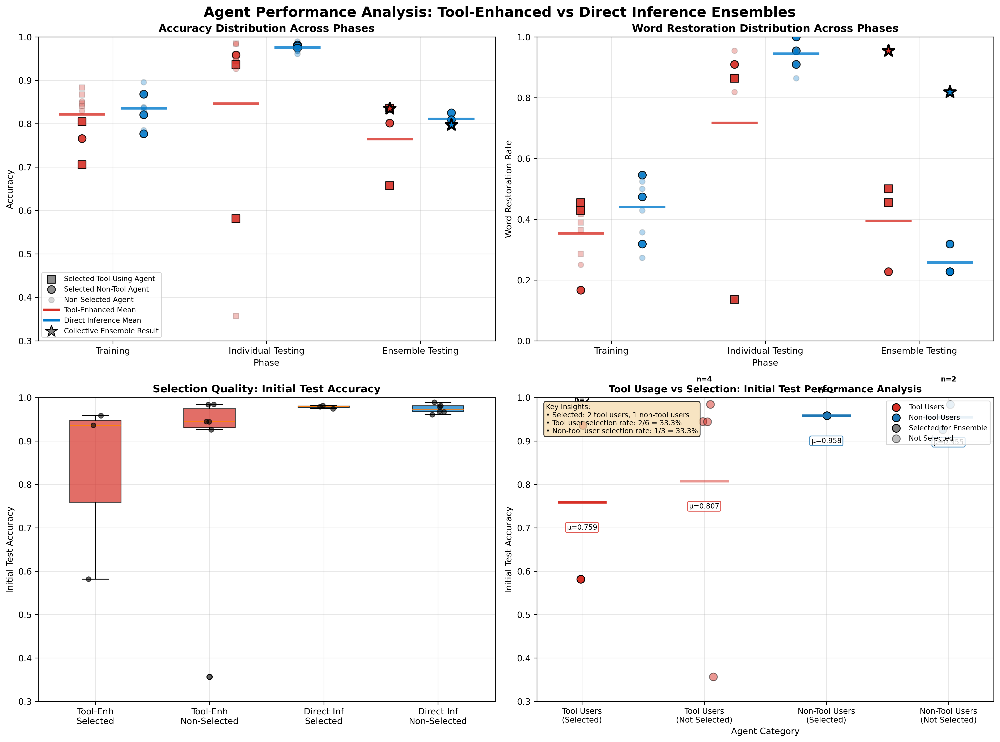
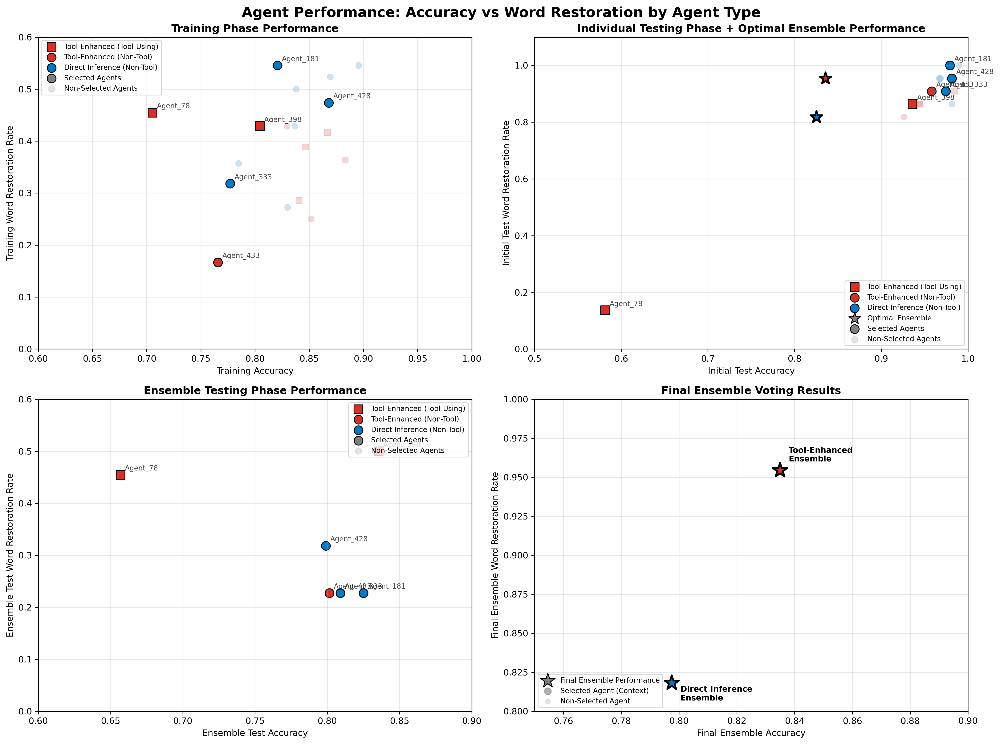

Using Reinforcement Learning With Ensemble Voting for Romanian Diacritic Restoration
Ingrid M. Caton
1. Using Reinforcement Learning With Ensemble Voting for Romanian Diacritic Restoration
Although large language models have proven broadly capable, their performance under one-shot prompting is often inconsistent (Brown et al. 2020). One-shot prompting has not been shown to fully resolve diacritic restoration: on their own, one-shot prompts can restore some diacritics, but in our informal observations there remains a set of words for which one-shot queries struggle to surpass roughly 80% accuracy. We do not characterize this threshold systematically here, and treat it as motivating observation rather than an established result. Separately, while the largest proprietary LLMs can be costly to instantiate and run at scale, our approach instead uses small, locally run LLaMA 3.2 agents; cost is therefore a secondary motivation, and we note that evolutionary training plus brute-force ensemble search incurs its own compute overhead, which we do not benchmark.
Part of the reliability problem might be addressed by identifying a set of parameters that generates better results. However, because large language models are not trained specifically for diacritic placement, we expect that even fine-tuned LLMs may retain blind spots — specific words and contexts that are not consistently predicted (we do not test fine-tuning directly in this study). On the other hand, agent performance can be augmented by tools that employ explicit methods for diacritic placement. Such tools have not, on their own, solved the problem either, so — as with parameter tuning — adding tools alone is unlikely to fully resolve diacritic restoration. We likewise expect reinforcement learning to improve accuracy without eliminating these blind spots.
We propose — and in this paper test — a composite approach intended to improve over individual agents and over single methods by combining them. Agents who are given tools can be allowed to decide between using the prediction provided by their tool or can decide to predict using the their own judgment (that is, the LLM can decide outside of the constraint of the model). Likewise, we can allow an agent who uses a specific method, e.g., agents that only use a tuned LLM with relatively high predictive accuracy, to participate with other such highly rated agents in ensemble voting. Specifically, if we allow agents to be trained on a diversity of data sets, we can allow multiple of the best agents from each training set to participate together in predicting observations that were not included in any of the training sets. While it would be tempting to simply select the agents that perform best, the agents that perform best on the new data set most likely are trained with data that has features similar to the features of the testing data. Instead, we could select the top performing agent or agents from each group to predict a new data set using ensemble voting.
While choice for tje last round of selection could be justified, we instead compare the accuracy of prediction of the testing data using every possible combination of ensemble agents selected from different rounds. The simplest approach for this case would be to select one agent from each training group to form combinations. The group selected from this set would be the group whose ensemble voting generated the highest accuracy. Finally, ensemble voting from this group will be used as a tool to place diacritics in any context.
2. Reinforcement Learning for Agent Tuning
2.1 Attribute Mutation and Reproduction
All agents are assigned parameters that are passed as part of any LLAMA 3.2 query. LLAMA parameters include:
- temperature
- max_tokens
- top_p
- frequency_penalty
- presence_penalty
In additions to these attributes, agents may have strategy specific attributes. These may include:
- use_tools
- analysis_weight_synset
- analysis_weight_phonetic
- analysis_weight_frequency
- analysis_confidence_threshold
- strategy_aggression
- prefer_common_patterns
- conservative_threshold
- aggressive_threshold
2.2 Tool Usage
Agents in our reinforcement learning framework may employ a sophisticated multi-strategy approach to diacritic restoration that combines direct LLM inference with external analysis tools. Each agent operates according to a discrete strategy space that determines both its analytical methodology and decision-making processes. The strategy selection mechanism is governed by eleven distinct parameters that are evolved through reinforcement learning, creating a rich landscape of possible agent behaviors.
2.2.1 Strategy Space Definition
The complete strategy space $\mathcal{S}$ for each agent $i$ at time $t$ is defined by the parameter vector:
$\mathbf{s}_{i,t} = \langle u_t, w_s, w_p, w_f, w_c, \theta_c, \alpha, \phi_p, \phi_c, \tau_{con}, \tau_{agg} \rangle$
where each component represents a specific strategic dimension:
- $u_t \in \{0, 1\}$ : Binary tool usage indicator
- $w_s, w_p, w_f, w_c \in [0, 1]$ : Analysis weights for synset, phonetic, frequency, and contextual strategies
- $\theta_c \in [0.1, 0.95]$ : Confidence threshold for accepting tool recommendations
- $\alpha \in [0, 1]$ : Aggression factor for low-confidence decisions
- $\phi_p, \phi_c \in \{0, 1\}$ : Binary indicators for pattern preference and contextual analysis usage
- $\tau_{con}, \tau_{agg} \in [0.01, 0.99]$ : Conservative and aggressive confidence thresholds with constraint $\tau_{con} < \tau_{agg}$
2.2.2 Primary Strategy Classes
Agents select between two fundamental strategy classes based on the tool usage indicator $u_t$:
Strategy Class A: Direct LLM Inference ($u_t = 0$)
Agents employing Strategy Class A rely exclusively on the large language model's inherent capabilities for diacritic restoration. The decision process follows:
$\hat{y}_{i,t} = \text{LLM}(\mathbf{x}_t; \boldsymbol{\theta}_{i,t}^{LLM})$
where $\mathbf{x}_t$ is the input sentence without diacritics and $\boldsymbol{\theta}_{i,t}^{LLM}$ represents the agent's LLM parameters (temperature, top_p, frequency_penalty, presence_penalty, max_tokens).
Strategy Class B: Tool-Augmented Analysis ($u_t = 1$)
Agents using Strategy Class B integrate external analysis tools with LLM inference. This creates a hierarchical decision process: a tool recommendation is accepted when its combined confidence clears the agent's evolved thresholds (Section 2.2.5); otherwise the word is left as produced by the LLM. The tool thus acts as a gated override rather than an unconditional one.
2.2.3 Tool-Augmented Analysis Framework
For agents with $u_t = 1$, the system employs four distinct analytical strategies that operate in parallel before being combined through a weighted consensus mechanism:
Strategy B.1: Synset-Based Semantic Analysis
This strategy leverages Romanian WordNet (RoWordNet) synsets to validate diacritic variants through semantic consistency. The synset_score quantifies how many semantic meanings (synsets) are available for each diacritic variant, providing evidence of lexical validity. For each word $w_j$ in the input sentence, the strategy computes:
$\text{synset_score}(w_j, v_{j,k}) = \frac{|\text{Synsets}(v_{j,k})|}{|\mathcal{V}_j|} \cdot \text{semantic_consistency}(v_{j,k}, \text{context}_j)$
where $v_{j,k}$ represents the $k$-th diacritic variant of word $w_j$, and $\mathcal{V}_j$ is the set of all possible variants. The semantic_consistency component evaluates whether the variant's semantic meaning aligns with the surrounding sentence context. Variants with multiple synsets receive higher base scores (typically 0.8 for unique synset holders, 0.6 for contested variants), while semantic consistency provides contextual validation through RoWordNet's semantic relationships. When only one variant possesses synsets among all possibilities, it receives maximum confidence; when multiple variants have synsets, the system applies comparative semantic analysis to determine the most contextually appropriate choice.
Strategy B.2: Phonetic Pattern Recognition
This strategy applies Romanian-specific phonetic rules to identify high-probability diacritic placements. The phonetic_score evaluates rule-based evidence for diacritic placement using linguistically-motivated patterns:
$\text{phonetic_score}(w_j, v_{j,k}) = \sum_{r \in \mathcal{R}} \mathbb{I}[\text{rule}_r(w_j) = v_{j,k}] \cdot \text{weight}_r$
where $\mathcal{R}$ represents the set of Romanian phonetic rules and $\text{weight}_r$ indicates rule reliability. The implemented rules include: (1) High-confidence transformations for function words ('si'→'și', 'ca'→'că', 'in'→'în') with weights 0.9-0.95; (2) Positional rules for î/â distribution (î at word boundaries, â in medial positions) with weight 0.6; (3) Morphological endings (words ending in 'ă', 'ț', 'ș') with weight 0.6; (4) Conservative defaults for short function words and unknown patterns with weight 0.1-0.4. The system implements phonetic constraints that prevent inappropriate diacritic placement in grammatical particles and ensure morphophonological consistency with Romanian orthographic conventions.
Strategy B.3: Frequency-Based Pattern Analysis
This strategy uses word frequency data from the wordfreq library (Speer 2022) to estimate diacritic probabilities. We note that wordfreq was frozen by its maintainer in 2021, so these frequencies reflect a 2021-era snapshot rather than current usage. The frequency_score provides corpus-based estimates:
$\text{frequency_score}(w_j, v_{j,k}) = \frac{\text{freq}(v_{j,k})}{\sum_{v \in \mathcal{V}_j} \text{freq}(v)} \cdot \text{confidence_multiplier}(\phi_p)$
where the confidence_multiplier adjusts based on the agent's preference for common patterns ($\phi_p$). The confidence calculation employs hand-set frequency thresholds (fixed a priori, not tuned in this study; we did not perform a sensitivity analysis): very high frequency words (freq > 1e-4) receive confidence 0.85, high frequency words (freq > 1e-5) receive 0.70, medium frequency words (freq > 1e-6) receive 0.55, and rare words receive 0.30. When multiple variants exist, the system calculates frequency ratios between top candidates; ratios exceeding 5.0 boost confidence by 20%, while ratios below 2.0 reduce confidence by 15%. The confidence_multiplier implements agent-specific frequency preferences: agents with $\phi_p = 1$ (prefer common patterns) maintain full confidence scores, while agents with $\phi_p = 0$ receive 85% of base confidence, allowing exploration of less frequent but potentially correct variants.
Strategy B.4: Contextual N-gram Analysis
When $\phi_c = 1$, agents utilize contextual n-gram analysis using Romanian corpus data from subs2vec. The contextual_score leverages large-scale corpus statistics to evaluate diacritic variants in context:
$\text{contextual_score}(w_j, v_{j,k}) = \lambda \cdot P(w_{j-1}, v_{j,k}, w_{j+1}) + (1-\lambda) \cdot P(w_{j-1}, v_{j,k})$
where $\lambda$ balances trigram and bigram evidence, and probabilities are estimated from the Romanian OpenSubtitles corpus via subs2vec. The system implements memory-persistent trigram and bigram engines that load over 1 million n-grams from the Romanian corpus. For each word position, the contextual analyzer evaluates all possible trigrams $P(w_{j-1}, v_{j,k}, w_{j+1})$ and bigrams $P(w_{j-1}, v_{j,k})$ where $v_{j,k}$ represents each candidate diacritic variant. The scoring employs comparative analysis: rather than using absolute n-gram frequencies, the system computes relative probabilities among competing variants for the same context position. This approach accounts for corpus sparsity and provides robust confidence estimation even for rare trigrams. The weighting parameter $\lambda$ (typically 0.7) prioritizes trigram evidence while maintaining bigram backup for contexts where trigram data is unavailable.
2.2.4 Multi-Strategy Integration
Tool-augmented agents combine individual strategy scores through a weighted consensus mechanism:
$\text{combined_score}(w_j, v_{j,k}) = w_s \cdot \text{synset_score}(w_j, v_{j,k}) + w_p \cdot \text{phonetic_score}(w_j, v_{j,k}) + w_f \cdot \text{frequency_score}(w_j, v_{j,k}) + w_c \cdot \text{contextual_score}(w_j, v_{j,k})$
The optimal variant for each word is then selected as:
$v_j^* = \arg\max_{v_{j,k} \in \mathcal{V}_j} \text{combined_score}(w_j, v_{j,k})$
2.2.5 Confidence-Based Decision Thresholds
The final decision to accept or reject tool recommendations employs a sophisticated three-tier confidence system governed by evolved threshold parameters. The decision mechanism operates through a hierarchical evaluation process that balances analytical confidence with agent-specific risk tolerance:
$\text{decision}(w_j) = \begin{cases} v_j^* & \text{if } \text{combined_score}(w_j, v_j^*) \geq \theta_c \\ v_j^* & \text{if } \tau_{con} \leq \text{combined_score}(w_j, v_j^*) < \theta_c \text{ and } \alpha > \tau_{agg} \\ w_j & \text{otherwise} \end{cases}$
The primary confidence threshold $\theta_c$ (analysis_confidence_threshold) represents the minimum combined score required for immediate tool recommendation acceptance, with evolutionary range $[0.1, 0.95]$. The aggressive acceptance threshold $\tau_{agg}$ implements a dynamic confidence adjustment based on the agent's strategy aggression parameter $\alpha$:
$\tau_{agg} = (1.0 - \alpha) \times 0.5 + 0.1$
This formulation ensures that highly aggressive agents ($\alpha \rightarrow 1$) have lower effective thresholds ($\tau_{agg} \rightarrow 0.1$), while conservative agents ($\alpha \rightarrow 0$) require higher confidence ($\tau_{agg} \rightarrow 0.6$). The conservative threshold $\tau_{con}$ provides a lower bound below which no recommendations are accepted regardless of aggression level.
Threshold Interaction Effects: The system implements a sophisticated interaction between multiple confidence parameters that creates distinct behavioral regimes. Agents with high $\theta_c$ (>0.8) and low $\alpha$ (<0.3) exhibit ultra-conservative behavior, accepting only the most confident tool recommendations. Conversely, agents with low $\theta_c$ (<0.4) and high $\alpha$ (>0.7) demonstrate aggressive restoration patterns, applying diacritics even with moderate tool confidence. The intermediate region ($0.4 \leq \theta_c \leq 0.8$, $0.3 \leq \alpha \leq 0.7$) produces balanced agents that selectively apply recommendations based on contextual evidence strength.
2.2.6 Strategy Evolution and Mutation
All strategy parameters undergo evolutionary pressure through a sophisticated mutation operator that preserves parameter relationships while enabling exploration of the strategy space. The mutation process operates at two distinct levels: discrete binary parameters and continuous real-valued parameters, each with parameter-specific perturbation characteristics:
$s'_{i,t+1} = \begin{cases} \neg s_{i,t} & \text{if } s_{i,t} \in \{u_t, \phi_p, \phi_c\} \text{ and } \xi < \mu \\ \text{clip}(s_{i,t} + \mathcal{N}(0, \sigma^2), [a, b]) & \text{if } s_{i,t} \in \mathbb{R} \text{ and } \xi < \mu \\ s_{i,t} & \text{otherwise} \end{cases}$
where $\xi \sim \text{Uniform}(0,1)$, $\mu = 0.10$ represents the per-parameter mutation rate, and parameter-specific noise scales $\sigma^2$ vary by strategic function. The mutation operator implements distinct perturbation magnitudes: strategy weights ($w_s, w_p, w_f, w_c$) use $\sigma = 0.1$, confidence thresholds use $\sigma = 0.05$, and behavioral parameters use $\sigma = 0.2$.
Threshold Mutation Constraints: The confidence threshold parameters require specialized mutation logic to maintain valid decision boundaries. The conservative and aggressive thresholds ($\tau_{con}, \tau_{agg}$) must satisfy the ordering constraint $\tau_{con} < \tau_{agg}$ to ensure coherent decision logic. The mutation operator addresses this through coordinated threshold evolution:
$\tau'_{con} = \max(0.01, \min(\tau_{agg} - 0.01, \tau_{con} + \mathcal{N}(0, 0.01)))$
$\tau'_{agg} = \max(\tau'_{con} + 0.01, \min(0.99, \tau_{agg} + \mathcal{N}(0, 0.01)))$
This sequential mutation process ensures that conservative thresholds never exceed aggressive thresholds while allowing both parameters to explore their full feasible ranges $[0.01, 0.98]$ and $[0.02, 0.99]$ respectively.
Mutation-Driven Strategy Discovery: The evolutionary mutation process enables discovery of superior parameter combinations through systematic exploration of the $2^3 \times \mathbb{R}^8$ strategy space (three binary parameters $u_t, \phi_p, \phi_c$ and eight continuous parameters $w_s, w_p, w_f, w_c, \theta_c, \alpha, \tau_{con}, \tau_{agg}$). Mutation rates are calibrated to balance exploration and exploitation: the 10% per-parameter mutation rate ensures substantial strategy diversity across generations while maintaining sufficient stability for strategy refinement. High-performing strategies undergo gradual optimization through small perturbations, while poorly-performing strategies experience larger mutations that can lead to strategy regime changes. This dual-scale mutation process facilitates both local optimization within strategy clusters and global exploration across distinct analytical approaches.
Confidence Boundary Evolution: The mutation process directly impacts confidence interpretation boundaries through threshold parameter evolution. Agents that discover effective confidence boundaries through mutation gain competitive advantages and propagate these threshold configurations to subsequent generations. This creates evolutionary pressure toward threshold combinations that optimize the trade-off between precision (avoiding false positive diacritic placements) and recall (correctly identifying required diacritics). The system's ability to evolve confidence interpretation boundaries represents a key advantage over fixed-threshold approaches, as different text domains and difficulty levels may require distinct confidence calibration strategies.
2.2.7 Strategy Space Combinatorics
The complete strategy space contains $2^3 \times \mathbb{R}^8$ possible configurations; discretizing the eight continuous parameters to three decimal places yields on the order of $2^3 \times (10^3)^8$ candidate combinations — a space far too large to enumerate, motivating the evolutionary search. The evolutionary algorithm explores this space through:
- Random initialization across the full parameter ranges
- Mutation-driven exploration with parameter-specific perturbation scales
- Selection pressure favoring strategies that maximize reward functions
- Cross-generational strategy preservation through elite agent selection
This framework ensures that agents can discover optimal combinations of analytical strategies while maintaining diversity in the population's approach to diacritic restoration challenges.
2.3 Reward AllocationEven without fine tuning, LLMs generate impressive predictions. The landscape of LLM parameter values - that is, the correspondence of agent parameter values to expected outcomes - is too vast to explore and, ex ante, should be assume to be lumpy and discontinuous. We could develop a neural network to predict correspondence between inputs and the best parameter values, but this would add a layer of complexity and increase usage of computational resources in a manner that would likely limit the breadth of pottential applications for the solution. We elect to use a simple economic model of reinforcement learning where agents incur a fixed marginal cost each period. For an agent to survive, its performance must generate rewards that exceed its costs. We set a fixed aggregate reward value that is divided amongst agents according to the relative performance of each agent. Mechanically, dividing a fixed reward pool by each agent's share of (squared) performance is a form of fitness-proportional selection (Goldberg 1989; Holland 1992); we frame it in economic terms because agents face a survival constraint, but we do not claim a market mechanism with inter-agent transactions or endogenous prices.
$R_t = \sum_{i=1}^{N} r_{i,t}$
Now, each $r_t$ is divided according to two general criterion: 1) how accurate was the agent and 2) how quickly did the agent generate the response. Accuracy is estimated on two margins. First, what is the overall accuracy, measured by the proportion of correct predictions to the total number of words?
$a_{i_t} = \frac{c_{i,t}}{N}$
Second, did the agent correctly predict the target word, which is a word that is typically difficult for AI systems of all kinds to predict.
$a_{i_t}^{target} = \{1\ \text{if}\ \hat{c}_{i,t}^{target} \equiv c_{i,t}^{target}\ \text{else}\ 0\}$
We wish to provide increasing rates of reward for accuracy. For example, 0.1 percentage increase from 0.8 to 0.9 should be reward more highly than a 0.1 percentage increase from 0.2 to 0.3. When reward is allocated, it is allocated according to the squared value of each agent's accuracy. Each agent's squared accuracy is divided by the sum of squared accuracies:
$R_{a_{i_t}} = R_{accuracy}\frac{a_{i_t}^2}{\sum_{j=1}^{N} a_{j,t}^2}$
Likewise, the agent's average restoration of a word, supposing the number of restoration attempts is greater than 1, would be the squared value of target word accuracy divide by the sum of squared values of target word accuracies:
$R_{a_{i_t}^{target}} = R_{accuracy}^{target}\frac{a_{i_t}^{target^2}}{\sum_{j=1}^{N} a_{j,t}^{target^2}}$
We alo reward agent time efficiency with increasing returns. To accomplish this, we squared the difference between the agent's time taken to generate a prediction and the time taken by the slowest agent:
$E_{i_t} = \frac{(T_{max} - T_{i,t})^2}{\sum_{j=1}^{N} (T_{max} - T_{j,t})^2}$
$E_{i_t}$ is augmented by the accuracy reward of the agent to generate efficiency reward for overall accuracy and for target word accuracy:
$R_{ea_{i_t}} = R_{efficiency} E_{i_t}\frac{a_{i_t}^2}{\sum_{j=1}^{N} a_{j,t}^2}$
Likewise, target accuracy is also augmented:
$R_{ea_{i_t}^{target}} = R_{efficiency}^{target} E_{i_t^{target}}\frac{a_{i_t}^{target^2}}{\sum_{j=1}^{N} a_{j,t}^{target^2}}$
Notice that if an agent's accuracy is 0, its reward for time efficiency will also be 0. If an agent is fast and accurate, that agent will receive a greater reward than another agent who is equally accurate, but relatively slower.
In our model, we split the total reward into four equal parts:
$R^* = R_{accuracy} + R_{accuracy}^{target} + R_{efficiency} + R_{efficiency}^{target}$
The aggregate value of rewards is the same in every period:
$R_t = R^*$
Since each agent consumes one life-unit per period, the value of the reward, $R$ determines the average number of agents that can be supported in the environment. We will use this fact to quickly select from a relatiely large pool of agents. We amend the rule that $R_t = R$ by differentiating between the starting population and the target population. $R_0 = N_0$. The value of $R_t$ decreases over so that $R_{t \ge 0} = \frac{R_0}{t+1}\ \text{if}\ R_t > R^*$.
Agents are trained over three generations The performance of each agent across each generation is recorded. Agents are ranked by average accuracy within the generation. If multiple agents record the same accuracy, then the tie breaker is set by the target word accuracy. From each generation, a fixed number of the top performers will be selected for testing that occurs after all three generations have completed.
Selecting top performers from each generation is intended to integrate diverse perspectives. Performance in each generation reflects the information contained in that generation. The aim is to avoid selecting only agents who performed well in the generation that happened to be relatively easy to predict. We did not run an ablation comparing this generation-balanced selection against naive top-k selection, so its benefit remains a design hypothesis rather than a measured effect. It also ensures that the information set from each generation is appropriately represented during testing. If an agent is ranked amongst top performers across multiple generations, it will be included in the set of top performers from earlier generation and leave spots to be filled in any later generation where it was ranked amongst the top performers.
2.4 Testing and Ensemble Voting
Following the completion of the evolutionary training phase, the system transitions to a rigorous two-stage evaluation protocol designed to assess agent performance on unseen data and optimize ensemble composition through systematic selection procedures. The testing framework operates on three disjoint data partitions: the training corpus $\mathcal{D}_{train}$, the individual testing corpus $\mathcal{D}_{test}$, and the ensemble validation corpus $\mathcal{D}_{ensemble}$. We note that $\mathcal{D}_{test}$ is used for both individual-agent selection and ensemble selection (Section 2.4.2), so metrics reported on $\mathcal{D}_{test}$ are in-sample selection quantities; only $\mathcal{D}_{ensemble}$ provides a held-out estimate.
2.4.1 Post-Training Individual Agent Evaluation
The first testing phase evaluates the top-performing agents from each generation on previously unseen data. Let $\mathcal{A}^*_G = \{A^*_{g,1}, A^*_{g,2}, \ldots, A^*_{g,k_g}\}$ represent the set of elite agents selected from generation $g \in \{1, 2, \ldots, G\}$, where $k_g$ denotes the number of top performers selected from generation $g$. The generation-balanced selection ensures equal representation across training epochs:
$\mathcal{A}^*_{balanced} = \bigcup_{g=1}^{G} \mathcal{A}^*_g \text{ subject to } |\mathcal{A}^*_g| = \kappa \text{ for all } g$
where $\kappa$ represents the uniform number of agents selected per generation. Each selected agent $A^*_{g,i}$ undergoes comprehensive evaluation on the testing corpus $\mathcal{D}_{test} = \{(x_j, y_j)\}_{j=1}^{N_{test}}$, where $x_j$ represents input sentences without diacritics and $y_j$ represents the corresponding ground truth restorations.
Individual agent performance is measured through dual metrics that capture both overall restoration accuracy and precise word-level matching:
$\text{accuracy}(A^*_{g,i}) = \frac{1}{N_{test}} \sum_{j=1}^{N_{test}} \frac{|\text{correct_words}(A^*_{g,i}(x_j), y_j)|}{|\text{words}(y_j)|}$
$\text{word_restored}(A^*_{g,i}) = \frac{1}{N_{test}} \sum_{j=1}^{N_{test}} \mathbb{I}[A^*_{g,i}(x_j) = y_j]$
The word-level accuracy metric employs strict exact-match criteria, ensuring that only perfectly restored sentences contribute to the word_restored score, thereby providing rigorous evaluation of complete restoration capability.
2.4.2 Brute-Force Ensemble Optimization
The second phase implements systematic ensemble optimization through exhaustive evaluation of agent combinations. Given the set of tested agents $\mathcal{A}^*_{balanced}$ with $|\mathcal{A}^*_{balanced}| = M$ members, the system evaluates all possible $\binom{M}{K}$ combinations of size $K$ (where $K = \text{ENSEMBLE_SIZE}$) to identify the optimal ensemble configuration:
$\mathcal{E}^* = \arg\max_{\mathcal{E} \subseteq \mathcal{A}^*_{balanced}, |\mathcal{E}|=K} \text{ensemble_accuracy}(\mathcal{E}, \mathcal{D}_{test})$
The optimization process incorporates generation-balanced constraints to ensure diverse representation across training epochs. For each candidate ensemble $\mathcal{E} = \{A_{e_1}, A_{e_2}, \ldots, A_{e_K}\}$, the system enforces equal generation representation:
$|\{A \in \mathcal{E} : \text{generation}(A) = g\}| = \lfloor K/G \rfloor \text{ for all } g \in \{1, 2, \ldots, G\}$
with remaining slots allocated to maximize performance while maintaining generational diversity.
2.4.3 Majority Voting Mechanism
The ensemble decision-making process employs word-level majority voting to combine individual agent predictions. For a given input sentence $x = (w_1, w_2, \ldots, w_n)$, each agent $A_i \in \mathcal{E}$ produces a prediction $\hat{y}_i = A_i(x) = (\hat{w}_{i,1}, \hat{w}_{i,2}, \ldots, \hat{w}_{i,n_i})$. The ensemble prediction $\hat{y}_{ensemble}$ is constructed through position-wise majority voting:
$\hat{w}_{ensemble,j} = \arg\max_{w} \sum_{i=1}^{K} \mathbb{I}[\hat{w}_{i,j} = w]$
where $\mathbb{I}[\cdot]$ represents the indicator function and the maximization is taken over all word variants proposed by ensemble members at position $j$. This voting mechanism handles variable-length predictions through dynamic padding and ensures robust consensus formation even when agents produce differing sentence structures.
2.4.4 Final Ensemble Validation
The optimized ensemble $\mathcal{E}^*$ undergoes final validation on the reserved ensemble corpus $\mathcal{D}_{ensemble}$, which is held out from both training and optimization. Because $\mathcal{E}^*$ is chosen to maximize accuracy on $\mathcal{D}_{test}$, accuracy on $\mathcal{D}_{test}$ is optimistically biased; the $\mathcal{D}_{ensemble}$ figure is the appropriate held-out estimate of generalization (subject to the small sample size discussed in Section 3.10):
$\text{validation_accuracy}(\mathcal{E}^*) = \frac{1}{N_{ensemble}} \sum_{j=1}^{N_{ensemble}} \text{accuracy}(\text{vote}(\mathcal{E}^*(x_j)), y_j)$
where $\text{vote}(\cdot)$ represents the majority voting function and $N_{ensemble} = |\mathcal{D}_{ensemble}|$. The validation phase employs identical performance metrics to enable direct comparison with individual agent performance, providing empirical evidence of ensemble effectiveness.
This comprehensive testing framework ensures that the final ensemble represents a robust, generalizable solution that leverages the diverse capabilities developed across multiple generations of evolutionary optimization while maintaining strict evaluation standards through independent data partitioning and rigorous performance measurement protocols.
3. Experimental Results
The experimental framework conducted two distinct sets of experiments to evaluate the effectiveness of tool-augmented agents versus direct LLM inference agents in Romanian diacritic restoration. This section presents a comprehensive analysis of agent performance across three critical phases: training, individual testing/ensemble optimization, and final ensemble voting.
3.1 Experimental Setup
Two ensemble configurations were evaluated:
- Tool-Enhanced Pool: 9 candidate agents (6 tool-using and 3 non-tool), all drawn from the strategy-class-B-capable population (tool-augmented analysis)
- Direct Inference Pool: 9 candidate agents using exclusively strategy class A (direct LLM inference) without tool augmentation
From each 9-agent pool, a 3-agent ensemble was selected through generation-balanced optimization. Final ensemble composition: Tool-Enhanced (Agent_398, Agent_433, Agent_78) and Direct Inference (Agent_181, Agent_333, Agent_428). Throughout, "pool" denotes the 9 candidates and "ensemble" the 3 voting members.
3.2 Performance Trajectory Analysis
Figure 1 presents comprehensive trajectory analysis showing agent performance evolution across all experimental phases.

Figure 1: Agent Performance Trajectories Across Experimental Phases. The plots show individual agent trajectories (thin lines), selected agent averages (thick lines with squares), and ensemble-level performance indicators (stars). Tool-Enhanced agents (red) and Direct Inference agents (blue) show distinct performance patterns across training, initial testing, and ensemble testing phases.
3.3 Training Performance Analysis
During the reinforcement learning training phase, distinct performance patterns emerged between the ensemble types:
Tool-Enhanced Pool Performance (9 agents total):
- Average Training Accuracy: 82.2% (range: 70.5% - 88.3%)
- Average Word Restoration: 35.4% (range: 16.7% - 45.5%)
- Best Performer: Agent_435 with 88.3% accuracy, 36.4% word restoration
- Selected Agents: Agent_398 (80.4% acc, 42.9% word rest), Agent_433 (76.6% acc, 16.7% word rest), Agent_78 (70.5% acc, 45.5% word rest)
Direct Inference Pool Performance (9 agents total):
- Average Training Accuracy: 83.6% (range: 77.7% - 89.6%)
- Average Word Restoration: 44.1% (range: 27.3% - 54.5%)
- Best Performer: Agent_436 with 89.6% accuracy, 54.5% word restoration
- Selected Agents: Agent_181 (82.1% acc, 54.5% word rest), Agent_333 (77.7% acc, 31.8% word rest), Agent_428 (86.8% acc, 47.4% word rest)
Training Phase Key Findings:
Average Performance: Direct inference agents achieved marginally higher average training accuracy (83.6% vs 82.2%) and higher word restoration (44.1% vs 35.4%) during the evolutionary training phase. We report these as descriptive differences; no significance test was performed (see Section 3.10).
3.4 Individual Testing and Ensemble Optimization
Post-training individual agent evaluation on unseen data revealed dramatic performance improvements and critical insights for ensemble composition:

Figure 2: Comprehensive Agent Performance Analysis. Multi-panel analysis showing performance across experimental phases, tool usage patterns, and selection criteria. The bottom-right panel reveals that selection was merit-based rather than tool-usage based, with both tool-using and non-tool-using agents selected based on individual performance.
Tool-Enhanced Ensemble Initial Test Results:
- Average Initial Test Accuracy: 84.6% (selected agents only)
- Best Individual Performance: Agent_405 (not selected): 98.4% accuracy, 90.9% word restoration
- Selected Agent Performance: Agent_433: 95.8% accuracy, 90.9% word restoration; Agent_398: 93.6% accuracy, 86.4% word restoration; Agent_78: 58.2% accuracy, 13.6% word restoration
Direct Inference Ensemble Initial Test Results:
- Average Initial Test Accuracy: 97.6% (selected agents only)
- Best Individual Performance: Agent_74 (not selected): 98.9% accuracy, 100.0% word restoration
- Selected Agent Performance: Agent_428: 98.1% accuracy, 95.5% word restoration; Agent_181: 97.9% accuracy, 100.0% word restoration; Agent_333: 97.4% accuracy, 90.9% word restoration
Individual Testing Key Findings:
Higher selected-agent test scores for direct inference: The selected direct-inference agents averaged 97.6% initial test accuracy versus 84.6% for the selected tool-enhanced agents. Because agents were selected using this same $\mathcal{D}_{test}$, this gap reflects selection as much as generalization. The tool-enhanced average is further depressed by one weak selected member (Agent_78, 58.2%); the other two selected tool agents scored 95.8% and 93.6%.
Performance Distribution: While tool-enhanced agents showed greater performance variance, direct inference agents exhibited consistently high performance across all selected agents.
3.5 Scatter Plot Analysis

Figure 3: Accuracy vs Word Restoration Performance Correlation. Scatter plots across experimental phases showing the relationship between sentence-level accuracy and word-level restoration rates. Stars indicate ensemble-level performance during optimal selection (initial testing) and actual ensemble voting phases.
3.6 Final Ensemble Voting Performance
The final ensemble voting mechanism revealed crucial insights about collective intelligence capabilities:
Tool-Enhanced Ensemble Results:
- Final Accuracy: 83.5%
- Final Word Restoration: 95.5%
- Ensemble vs. its constituents: The ensemble's 83.5% accuracy did not exceed its strongest constituent on the individual test (Agent_433 scored 95.8% on $\mathcal{D}_{test}$); the ensemble's advantage is in word restoration (95.5%), which is higher than that of its constituent agents. (An earlier draft reported "+45.5 pp" and attributed "83.5%" to Agent_398; the baseline for that delta was not clearly defined and the attribution did not match Agent_398's measured scores of 80.4% in training and 93.6% on the individual test, so both have been removed pending reconciliation — see Section 3.10.)
Direct Inference Ensemble Results:
- Final Accuracy: 79.7%
- Final Word Restoration: 81.8%
- Ensemble vs. its constituents: The direct-inference ensemble's 79.7% accuracy is below its selected constituents' individual-test scores (97.4%–98.1%), as expected for an out-of-selection voting set; its word restoration is 81.8%. (An earlier draft reported the ensemble "underperformed best individual (Agent_181: 82.5%) by 2.8 pp" and "+59.1 pp" word restoration; the "82.5%" figure matched no measured score for Agent_181 — 82.1% in training, 97.9% on the individual test — and the baseline for "+59.1 pp" was undefined, so both have been removed pending reconciliation.)
3.7 Comparative Analysis and Discussion
An Observed Cross-Ensemble Difference (single comparison):
Although the selected direct-inference agents scored higher individually, in this single comparison the tool-enhanced ensemble scored higher on both final-voting metrics: accuracy (83.5% vs 79.7%) and word restoration (95.5% vs 81.8%). We cannot attribute this to tool augmentation per se: the comparison is unreplicated, uses 22 test sentences, and the ensembles were selected on the same test set. One plausible explanation is the analytic diversity contributed by tools, consistent with the ensemble-diversity literature (Krogh and Vedelsby 1995; Kuncheva and Whitaker 2003); but a confound — selection bias or sampling noise — cannot be excluded with the present data.
Ensemble Effectiveness Analysis:
In this run, ensemble voting was associated with higher word restoration for both ensemble types relative to their constituent agents, with the tool-enhanced ensemble reaching 95.5% word restoration on the 22-sentence set. This pattern is suggestive but, given the sample size, not established; on 22 sentences a single sentence shifts the metric by roughly 4.5 pp.
Selection vs. Performance Paradox:
The selection process favored agents with the highest individual testing performance, yet the tool-enhanced ensemble (containing agents with lower individual scores) scored higher than the direct inference ensemble (containing agents with higher individual scores) in final voting. This is consistent with the well-established result that individual accuracy does not by itself predict ensemble gain (Krogh and Vedelsby 1995; Kuncheva and Whitaker 2003). We emphasize that the present data — a single pair of 3-agent ensembles on 22 sentences — are too limited to establish complementarity as the cause rather than a contributing possibility.
3.8 Statistical Summary and Validation
The experiments were conducted on 22 test sentences per phase. This is a small sample: the differences reported below are descriptive and should be read as preliminary. We did not establish statistical significance, and we caution against treating any single-comparison gap as conclusive. In particular, gaps within roughly 4.5 pp correspond to one sentence on this set. Confirmatory evaluation on a larger held-out corpus with significance testing (e.g., bootstrap or McNemar's test; Dror et al. 2018) remains future work.
| Phase | Metric | Tool-Enhanced | Direct Inference | Advantage |
|---|---|---|---|---|
| Training | Average Accuracy | 82.2% | 83.6% | Direct (-1.4pp) |
| Training | Average Word Restoration | 35.4% | 44.1% | Direct (-8.7pp) |
| Training | Best Individual Accuracy | 88.3% (Agent_435) | 89.6% (Agent_436) | Direct (-1.3pp) |
| Individual Testing | Average Initial Accuracy | 84.6% | 97.6% | Direct (-12.9pp) |
| Individual Testing | Best Individual Initial Accuracy | 98.4% | 98.9% | Direct (-0.5pp) |
| Ensemble Voting | Final Accuracy | 83.5% | 79.7% | Tool-Enhanced (+3.8pp) |
| Ensemble Voting | Final Word Restoration | 95.5% | 81.8% | Tool-Enhanced (+13.7pp) |
3.9 Implications for Ensemble Learning
Read with the small-sample caveats above, the results are consistent with several hypotheses for ensemble learning in NLP tasks, which larger studies would be needed to confirm:
- Individual excellence need not predict collective performance: the ensemble containing individually weaker agents scored higher in voting — consistent with established ensemble-diversity theory (Krogh and Vedelsby 1995; Kuncheva and Whitaker 2003), though that theory also holds that diversity does not guarantee such an outcome.
- Possible benefit of tool augmentation: the tool-augmented agents may contribute analytical diversity that helps the ensemble, but we cannot rule out selection effects.
- Word restoration: ensemble voting was associated with higher word-restoration rates than the constituent agents in this run.
- Complementarity as a hypothesis: analytic diversity (tools vs. direct inference) is a plausible driver of the observed difference, offered here as a hypothesis rather than a demonstrated mechanism.
In our single, small-sample comparison, tool-enhanced ensemble voting performed better than direct-inference ensemble voting on both metrics. Whether it is generally superior for Romanian diacritic restoration requires replication on larger held-out data and comparison against established neural Romanian baselines (e.g., Ruseti et al. 2020; Náplava et al. 2018, 2021), which we leave to future work.
3.10 Limitations
We list the principal threats to validity so that the results above are read with appropriate caution:
- Small sample. All phases use 22 test sentences. With exact-match word restoration, a single sentence moves the metric by ~4.5 pp — comparable to the headline gaps (e.g., the +3.8 pp ensemble accuracy difference). No power analysis was performed.
- No significance testing. All reported differences are descriptive; we did not run significance tests (e.g., bootstrap or McNemar's; Dror et al. 2018).
- Selection on the test set. Both individual agents and the final ensemble are chosen by maximizing accuracy on $\mathcal{D}_{test}$. Accuracy reported on $\mathcal{D}_{test}$ is therefore optimistically biased and partly reflects selection; the held-out $\mathcal{D}_{ensemble}$ figure is the appropriate generalization estimate, and the cross-ensemble comparison may be influenced by this selection.
- Single, unreplicated comparison. The central observation rests on one tool-enhanced ensemble versus one direct-inference ensemble; it has not been replicated across random partitions or seeds.
- No external baseline. We do not compare against published neural Romanian diacritic-restoration systems, so absolute performance cannot be situated against the state of the art.
- Unspecified model and fixed heuristics. The exact LLaMA 3.2 checkpoint, quantization, and decoding settings should be reported for reproducibility; the four tool strategies use hand-set constants that were not tuned, and an English-centric base model was used without comparison to Romanian-tuned LLMs (e.g., Masala et al. 2024).
- Figures pending reconciliation. Two per-agent comparison figures from an earlier draft (an "83.5%" for Agent_398 and an "82.5%" for Agent_181, with "+45.5 pp"/"+59.1 pp" word-restoration deltas) did not match the per-phase measurements and have been removed; these comparisons should be recomputed from the logged results before publication.